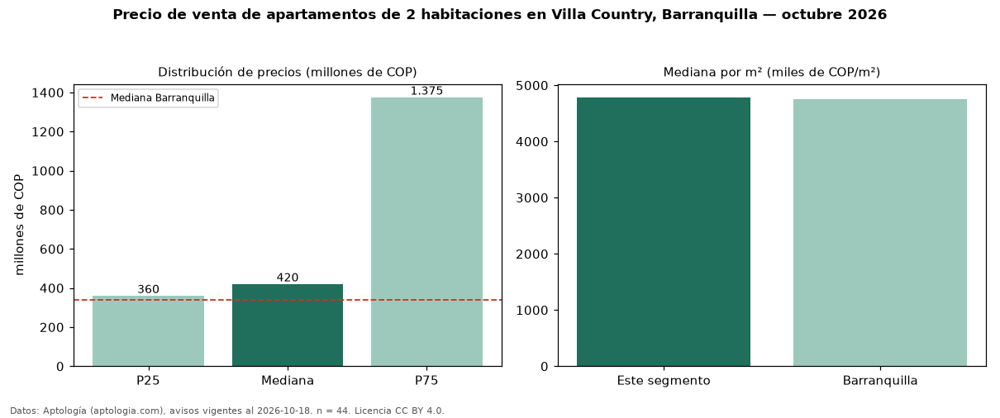

Precio de venta de apartamentos de 2 habitaciones en Villa Country, Barranquilla — octubre 2026
Con 44 avisos vigentes, el precio mediano de apartamentos de 2 habitaciones en venta en Villa Country, Barranquilla es COP 420 millones. Frente a la mediana de Barranquilla para apartamentos de 2 habitaciones (COP 340 millones), queda 24 % por encima. Por metro cuadrado, la mediana es COP 4,78 millones/m² (n = 44 avisos con área), 1 % por encima de Barranquilla (COP 4,75 millones/m²). Son 26 % de los 170 avisos de apartamentos en venta de la zona, cuya mediana general es COP 550 millones (−24 %). La mitad central de los avisos va de COP 360 millones a COP 1,38 mil millones (razón 3,8), una dispersión alta. El área mediana anunciada es 99 m². La administración mediana declarada es COP 750.500 al mes (n = 40). El estrato más frecuente es 6 (86 % de los avisos con estrato). Datos: Aptología (aptologia.com), CC BY 4.0 — https://www.aptologia.com/venta/barranquilla/villa-country. Archivos: PDF, CSV con las cifras y gráfica PNG.

| Avisos únicos | 44 |
|---|---|
| Percentil 25 | COP 360.000.000 |
| Mediana | COP 420.000.000 |
| Percentil 75 | COP 1.375.000.000 |
| Mediana por m² | COP 4.784.326 |
Fuente: avisos vigentes de portales inmobiliarios recopilados por Aptología, deduplicados (mínimo 30 avisos únicos por celda). Precios pedidos, no cerrados. Fecha: 2026-10-18.